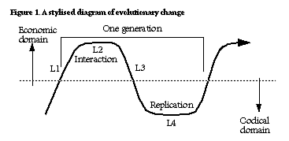

Evolution and Chance
Version 2.1 Draft 1
Copyright © 1996-1997 by
John Wilkins
[Last Update: April 17, 1997]

|
[This essay is meant to be read in conjunction with "Chance from a Theistic Perspective" by Loren Haarsma.] |
One of the recurring attacks on evolution comes from those who find the notion of random change distasteful. One of the more pernicious and persistent claims is Fred Hoyle's oft-quoted comment that accepting that evolution occurs by selection is like thinking that a 747 would result if a hurricane went through a junkyard [Hoyle 1981]. Some writers on evolutionary theory have not helped this misconception, although those who repeat it are remarkably resistant to correction on the actual claims made by scientific evolutionary theory. Others have dealt elsewhere with the exaggerated claims about Lamarckian inheritance, Hopeful Monsters, macromutation and dogs giving birth to cats. This is a brief philosophical discussion of the notion of randomness and chance in evolution.
Conclusions of this FAQ
Genetic changes do not anticipate a species' needs, and those changes may be unrelated to selection pressures on the species. Nevertheless, evolution is not fundamentally a random process.
The Idea of an Evolutionary Accident
Darwinism has long being interpreted as a view of nature as based upon "chance". Ideologues have pounced on this to bolster their own extra-scientific philosophies. The antiscientific Stalinist perversion of genetics in the USSR in the 1940s known after its main proponent as Lysenkoism is an example. In an attack on Darwinism, Lysenko said:
"Such sciences as physics and chemistry have freed themselves from chance. That is why they became exact sciences.Animate nature was developed and is developed on a foundation of the most strict and inherent rules. Organisms and species are developed on a foundation of their natural and intrinsic needs.
By getting rid of Mendelism-Morganism-Weismannism from our science we banish chance out of biological science.
We must keep in mind clearly that science is the enemy of chance."
[T D Lysenko, Aug 7 1948. Appleman 1970:559]
Mendel, Morgan and Weismann were the biologists who discovered genes and mutation. Their work underpins modern biology and modern evolutionary theory.
Lysenko's intuitions about chance in biology were so successful that 20 million people starved to death as a result of his false science applied to agriculture. With appropriate substitutions about "kinds" and God's purpose for species, the statement could have been made by a creationist.
Some modern evolutionary biologists do make much of chance. The Nobel Prize-winning molecular biologist Jacques Monod wrote [1972:114]:
The initial elementary events which open the way to evolution in the intensely conservative systems called living beings are microscopic, fortuitous, and totally unrelated to whatever may be their effects upon teleonomic functioning.But once incorporated in the DNA structure, the accident -- essentially unpredictable because always singular -- will be mechanically and faithfully replicated and translated: that is to say, both multiplied and transposed into millions or thousands of millions of copies. Drawn from the realm of pure chance, the accident enters into that of necessity, of the most implacable certainties. For natural selection operates at the macroscopic level, the level of organisms.
This conception of genetic changes as accidental and unique, about which no laws may be formulated, is fundamentally flawed, for all that it reappears in a number of influential works on evolution. Causes of genetic change are being uncovered routinely, and they involve better or worse understood mechanisms that are very far from random, in the sense that there are very clear causes for the changes, and that they can be specified in detail over general cases. Monod's use of the phrase "realm of pure chance" is rhetoric and is misleading at best, simply false at worst.
To make this clear, we need to see the general pattern of evolution.
Bipartite Evolution
Darwin called his principle of the evolutionary process "natural selection", a term that has given rise to almost as much confusion as the malignant phrase donated to him by the philosopher Herbert Spencer, "survival of the fittest". It has been understood to mean that the natural world is an agent, selecting according to some purpose or goal; that nature aims to perfect or complete the potential of a species. Nothing could be further from the truth.
Natural selection in modern science is a feedback process. It requires two "forces", as it were, one acting to faithfully (but not quite perfectly) replicate the structure of the organism (reproduction and ontogeny) and the other sorting the interactive characteristics of organisms with the environment (the phenotype or set of traits) into those more or less efficient at survival and therefore at reproduction opportunities. A better term for it, therefore, is "environmental sorting of heredity", since it is the way in which certain traits equip organisms that increases or decreases their chances at being passed on, relative to other traits in that population of organisms.
Sober [1984:99] illustrates the process in this way: imagine a child's toy that has numbers of three different size balls in a container, with two internal layers that have increasingly smaller holes in them. Shaking the toy (a randomising process) increases the likelihood that the smaller balls will pass through the first filter, and that the smallest balls through the second. The smallest balls are, in effect, the most "fit" (or make the best fit) and make it through to the bottom. There has been a selection, or sorting, process which results in the smallest balls making it to the bottom.
The feedback loop in evolution results when the genetic structure causes the phenotypic traits to develop (as opposed to when there is no covariance between gross organismic traits and its genotype, eg, acquired characteristics). Traits that are more efficient than the alternatives available in the reproductive population (called a 'deme' by Sewall Wright, who proposed the process of genetic drift mentioned below) have an increased likelihood of reproducing.
Darwin saw, from reading the 1798 Essay on Population by Malthus, that if there are more descendents than can survive with the environmental resources available, then the more efficient resource users will increase as a proportion of that population, and the less efficient decrease. If a breeding population or deme is isolated from its related populations long enough, then the traits in that deme that mark it out from other closely similar demes will diverge too far from the ancestral populations for interbreeding to occur. By that stage, the isolates will have become a new species.
In any small deme, there is a finite probability of any two organisms mating, and so the genetic makeup of the deme as a whole can lose and spread genes differently to the 'parent' population. In this way, also, the isolated population can differ, and speciation occur. This is known as 'genetic drift' and is a distinct process to natural selection.
Several important conclusions fall out from this way of modelling change. For a start, the term "species" becomes more fuzzy. There are no hard and fast boundaries between a parent species and its child species; at least, not at first. There is a clear boundary between a cat and a dog. There is a fuzzy boundary between a horse and a donkey, which can breed (but their progeny, the mule, is not fertile). Other species, such as zebras and horses, or lions and tigers, can interbreed and their progeny are sometimes fertile. "Species" becomes partly a taxonomic term of convenience rather than a metaphysical kind or class. Incipient species can be termed "varieties" or "subspecies" or even "races", and biologists nowadays tend to award species rank only when interbreeding is either behaviourally or genetically difficult. Many species of bird are distinct primarily in their mating behaviour, even though they are interfertile, as is the case with lions and tigers. The fact that they do not interbreed marks them as distinct species (this is called the Biological Species Concept).
Another conclusion to be drawn is that there is no set goal to selection. Variants arise naturally in all populations. Each population has its traits spread out over a distribution curve. While quadrupeds generally do not give birth to viable three legged individuals, legs can be longer or shorter, and whichever trait confers advantage at the time is the one which will be more widely reproduced. Given that resources are limited (or scarce, in Darwin's terminology) if for example longer legs give an advantage in survival over shorter legs, then the mean length of legs in that population will increase, and eventually take over ("go to fixation") in the absence of any other changes of environment. This does not happen because longer legs are in any eternal way more "perfect", but rather because they are more adequate for the tasks at hand of simply making a living long enough to reproduce. "Survival of the fittest" should be rephrased as "survival of the more adequate".
|
Sidebar: The terms "replicators" and "interactors" are due to R Dawkins and D L Hull (a biologist and a philosopher) and is now referred to as the Hull-Dawkins distinction [Dawkins 1977, 1986, Hull 1988, cf Williams 1992]. Note that under this general characterisation, the term "resources" includes access to mating opportunities, and so sexual selection is a subset of "natural" selection. |
The fact that environmental sorting occurs with living organisms sometimes blinds us to the fact that it can occur with other sorts of things. The general conditions for a Darwinian process are merely that there is a definite structure that gets replicated, which causes features that result in differential success at gaining resources, and that those resources are in turn what is required for replication to occur. Hence the feedback loop: replicators to interactors to replicators.
The heirarchy of effects of replication (gamete or germ cell, to zygote, to infant, to adult) and the hierarchy of interaction (access to food, selection of mate, reproduction and parenting) work in tandem as a cycle. Lewontin [1974] drew the process as a wave, which I adapt here:

where L1 is the set of processes, or laws, that regulate fertilisation, L2 the laws that regulate ontogeny (development of the fetus), L3 the laws that regulate individual growth and survival, and L4 the processes of mating and fertilisation. The Economic domain represents the broader environmental end of the spectrum, and The Codical domain represents the genetic environment.
This is not just restricted to biological change. "Darwinian" models have been developed to cover the replication of social phenomena (eg, Dawkins [1984], Cavalli-Sforza and Feldman [1981], Rindos [1984], Hull [1988], Plotkin [1994], Richards [1987]) and the so-called "genetic algorithms" now used in computer science to solve problems of large scale phenomena use formally identical steps. A generalised Darwinian process is one that has populations of interactors that replicate, and in which replication is causally correlated with interactive traits.
The Rules of Life
Some changes to genes involve mixing (say, between parents) according to well-understood principles of population and molecular genetics. Other changes involve chemical processes that interfere with the transcription of DNA to proteins, that cause (again, in accord with the principles of organic chemistry) mistranscriptions either at replication or at conception. Let's call these Replication Rules, the L1 processes of Lewontin's diagram above. "Random" in the sense of there being no causal process that determines the eventual genetic outcome, does not describe any event that occurs at any stage in replication.
Once a change has been caused, by whatever process, that change enters into the process of transcribing DNA into a phenotype (the structure of the organism). This is the process of production of the juvenile organism, known in animal biology as ontogeny, or development. [Analogous processes occur in other kingdoms, such as plants, but it does not pay to either be too literal, or to think that what is true of animals (especially of mammals) is therefore the model of what is true of all life.] The transcription of these proteins results in cellular structures that then develop into an organism in a process of differentiation and specialisation of cell reproductive lineages, resulting in skin, skeletal structures, organs, etc. These processes (L2 in the diagram) follow what we shall call Development Rules.
Finally, the resultant phenotype, or organism, is then a part of its ecology, attempting to gain a share of the resources it needs (food, mates, space) in competition with other organisms that also seek these resources. This includes predators, who want the resources of the organism's bodily organic chemistry. The rules that cover this sphere (L3 and L4 in the diagram) we may call Ecological Rules, and they cover also mating behaviour in species that mate.
Natural selection, including sexual selection, is a sorting or filtering process that occurs when variants caused by Replication Rules do better at survival under Development Rules and Ecological Rules than other variants in competition for ecological resources, and which replicate more frequently than those competitors. [This definition is very broad on purpose, for it includes both competition for food and other resources within a species and interspecific competition for survival; say, between predator and prey.]
Now, under most interpretations of scientific law, the sorts of rules that Replication Rules are, are definitely scientific laws [cf Ghiselin's and Thompson's essays in Ruse 1989]. Not too much rides on the form of this, though, for it is enough to say that explanations of DNA and RNA transcriptions are causal chains, and are therefore scientific explanations in the true sense: they explain what causes the outcomes from the initial conditions and the properties of the objects involved.
There is no basic randomness here, except as far as it arises from the general indeterminacy of the physical world (known as stochastic processes). The same is true for Development Rules. Fetal development in mammals is becoming well understood in terms of the causes of cell differentiation and gene activation. Once these processes have been fully uncovered, there will be no randomness here, either.
Therefore, randomness must enter into evolution per se, if it does, at the level of Ecological Rules; that is, in the ecological struggle [Sober 1984]. However, nobody can fairly argue against the statement that certain phenotypic properties -- a longer beak or stronger hindlegs -- can influence their relative reproduction in a population. So, even if the correlation is only a matter of frequency, there is still a nonrandom relationship between what is claimed as the cause and the effect.
Yet, it is often claimed that randomness drives evolution, as in the quotation from Monod above. We have to ask, where does chance really enter into evolution?
Random Relative to What?
To understand the randomness claimed for evolution by scientists, as opposed to that feared by theologians and moral philosophers, it's important to ask "random relative to what?" In any model of a process as described by a scientific theory, there are many things taken for granted. Philosophers of science refer to these as ancillary assumptions or hypotheses. Some of these are assumed from ignorance: science might not yet have any workable and tested theory or model to deal with that class of phenomena. Others are assumed because they are well worked out in another scientific theory or discipline.
For example, Darwin knew that there was heredity, but he did not have a good theory of heredity to work by. His selection theory (the version he and Wallace published) had to assume that traits were heritable. He did propose a theory of heredity (pangenesis) based on a now discredited view of the influence of the use of traits on reproduction, but it was never essential to the theory of natural selection. So far as his theory of evolution by selection was concerned, heredity was an area to be filled out later.
Once Mendel's principles of heredity were rediscovered, permitting mathematical models of genetic change at the level of populations to be formulated by Haldane, Fisher and Wright and others in the 1930s and 1940s, the so-called Neo-Darwinian ("synthetic") theory of natural selection used these results as ancillary hypotheses. Added to this Weissman's germ plasm theory that the sex cells (the "germ plasm") were not "reverse programmed' by the phenotypic organism (the "soma"), and natural selection of genetic content became a one-way causal process. Genes cause the ecologically active phenotype, but the phenotype does not program the information content of the genes. Hence, relative to natural selection, genetic content changes are "random". Let's call this the Black Box Conception of Randomness [See Bowler 1983 on the history of post-Darwinian theory and Dawkins 1996 for a fuller development of this.]
Another way to say this is just that the changes that get encoded in genes occur with no forethought to the eventual needs of the organism (or the species) that carries those genes. A gene change (for instance, a point mutation -- a mistake at a single locus of the genetic structure) may change in any way permitted by the laws of molecular biology, according to the specific causes at the time. This may result in a phenotypic change that may be better suited to current conditions than the others about at the time. However, it probably won't. So far as the local environment is concerned, the change is the result of a random process, a black box that isn't driven with reference to things going on at the level of the environment. It's not really random, of course, because it is the result of causal processes, but so far as natural selection is concerned, it may as well be.
Replication Rules must involve what Dawkins calls "high fidelity" replication. Too high a rate of error would introduce too much "noise" into the replication process for selection to work effectively. Error rates in replication are indeed very low ("Typical rates of mutation are between 10-10 and 10-12 mutations per base pair of DNA per generation", Chris Colby's Introduction to Evolutionary Biology FAQ). Each error is the result of purely physical processes and can at the micro level be theoretically predicted, although in the real world we could never predict the sorts of mutations and transcription errors that will result for any particular case, from a lack of information.
Replication Rules are not random in the sense that, say, Heisenberg's Principle of Uncertainty or quantum mechanics is sometimes supposed to show the fundamental randomness of reality. They are merely random with respect to natural selection. Natural selection is not random: it is the determinate result of sorting processes according to relative fitness. It is stochastic, in the sense that better engineered features can fail for reasons of probability (they may meet accidents unrelated to their fitness), but that poses no greater threat to the scientific nature of evolution than it does for, say, subatomic physics or information theory.
There are scientists and philosophers who think that probabilities represent a real indeterminacy in the world; that even if you had, in principle, full information about all causes for a system, it would still be possible only to predict the distribution curve rather than the outcome for any single object. This is called the propensity interpretation (Beatty and Finsen in Ruse 1989), and holds that real things have a real propensity to behave in a range of ways rather than a real set of properties that will specify a strict determined outcome. Whether this is true or not is not relevant to evolution as such, for if it is true, then it is true of everything, and not just living things.
Different Senses of Chance
We need to distinguish between two senses of "random": the one kind that involves a total break in the causal chain, and in which the event is essentially chaotic; the other that requires only unpredictability, such as the decay of unstable atoms, or Brownian motion, but which remains a caused event. These get confused all the time. There is nothing about changes in a genome or a gene pool that is random in the first sense, but much of the second sense. For example, shuffling a deck of cards results in a properly physical process of the rearrangement of each card, yet there is no real way to predict the order of a random shuffle. Cards don't just materialise in place, but you don't know what you will end up with (unless you bias the shuffling so it isn't random).
Gould [1993: 396f] has written about the different senses of "random" and "chance" in science:
"In ordinary English, a random event is one without order, predicatability or pattern. The word connotes disaggregation, falling apart, formless anarchy, and fear. Yet, ironically, the scientific sense of random conveys a precisely opposite set of associations. A phenomenon governed by chance yields maximal simplicity, order and predictability--at least in the long run. ... Thus, if you wish to understand patterns of long historical sequences, pray for randomness."
Why is this? It has to do with the nature of explanation. An explanation is an answer to a set of questions about something that presents a problem. Historical explanations deal with long and complex processes, with causes that continue back to the beginning of the universe, and are known as etiologies, from the Greek aitos, for 'cause'. Where does an etiological explanation stop? In science, explanations have to deal with phenomena in their own terms, dealing with the properties of the things being explained. Evolution through natural selection deals with the changes of organisms through time. The causes of mutations are not evolutionary processes; the changes to organisms that result from mutations are. In other words: given that organisms accrue different traits (from whatever causes, and which we now know are mutations) evolution is the result of these in terms of ecological benefits.
Consider an explanation of a falling object's trajectory. Newton's laws show that without such things as air friction or rocket exhaust an object falls in a parabola. Yet no object in the existence of the universe has fallen in a mathematically precise parabola. Gravitation from distant objects, winds caused by the weather on a specific day, and friction on irregular surfaces all affect any real trajectory.
A full explanation of the path taken by the cup of coffee my cat knocked onto the floor the other day nees to deal with the history of the manufacture of the cup, the physiology and psychology of the cat, the historical circumstances whereby the cat and cup came into contact, and so forth back to the big bang. Such an explanation is humanly impossible.
These things are "contingent". Contingency is a technical term used in philosophy and science to label things that are "inessential" to the explanation. There are too many things to be explained, and in any event they do not really affect the efficiency of the explanation. Some things one can take for granted, other things just don't make a significant difference.
Gould has written that if we could rewind the "tape" of evolution and replay it, the result would not be the same (Gould 1989). Among other things, humans are almost certain not to re-evolve. This is because the number of contingent causes (asteroids hitting the earth, continental drift, cosmic radiation, the likelihood of significant individuals mating and producing progeny, etc) are so high that it is unlikely they would occur again in the same sequence, or even occur at all. If an asteroid hadn't hit the Yucátan Peninsula 65 million years ago, for example, mammals probably would never have diversified, as they didn't in the 100 million years before that.
Processes explained by science are affected by their intrinsic properties, the initial conditions and the boundary conditions. The cup fell from 1 meter. That's an initial condition. There was no real wind, but there was air friction. Those are boundary conditions. The cup had a certain mass and fell in a gravitational field of 1g. Those are the intrinsic properties. These last are not explained by Newtonian physics, but by Einstein's physics of time and space.
Contingent events are sometimes exceedingly sensitive to the initial conditions. A single slight difference can lead to a radically different outcome. If the cup fell from one meter but into the folds of a rigid tablecloth (a boundary condition), then a millimeter of difference in the way it fell (in its initial conditions) could leave it in pieces on kitchen floor, or in the dog's sleeping basket and safe, though in need of a wash.
Evolutionary theory explains why objects with certain properties move and change the way they do: how organisms change over time. In evolution, the initial and boundary conditions are contingent. That is the extent, the whole of it, of randomness and chance in the history of life.
Fear of the ordinary sense of chance and random which Gould describes above arises largely from a desire to find meaning in the events of the world around us. Science is not the appropriate place to find this meaning. Neither can meaning be imposed upon scientific explanations. Attempts to impose preconditions on science can have, as they did in the case of Lysenkoism, dire consequences, and at the very least they impede science in its search for adequate understanding of the world around us.
Some Final Words from the Professionals
Since the first version of this essay, Dawkins published his 1996. Since Dawkins is sometimes represented denying any role in evolution for chance at all, I profer the following quotations:
It is grindingly, creakingly, obvious that, if Darwinism were really a theory of chance, it couldn't work. [Dawkins 1996: 67]Darwinism is widely misunderstood as a theory of pure chance. Mustn't it have done something to provoke this canard? Well, yes, there is something behind the misunderstood rumour, a feeble basis to the distortion. one stage in the Darwinian process is indeed a chance process -- mutation. Mutation is the process by which fresh genetic variation is offered up for selection and it is usually described as random. But Darwinians make the fuss they do about the 'randomness' of mutation only in order to contrast it to the non-randomness of selection. It is not necessary that mutation should be random for natural selection to work. Selection can still do its work whether mutation is directed or not. Emphasizing that mutation can be random is our way of calling attention to the crucial fact that, by contrast, selection is sublimely and quintessentially non-random. It is ironic that this emphasis on the contrast between mutation and the non-randomness of selection has led people to think that the whole theory is a theory of chance.
Even mutations are, as a matter of fact, non-random in various senses, although these senses aren't relevant to our discussion because they don't contribute constructively to the improbable perfection of organisms. For example, mutations have well-understood physical causes, and to this extent they are non-random. ... the great majority of mutations, however caused, are random with respect to quality, and that means they are usually bad because there are more ways of getting worse than of getting better. [Dawkins 1996:70-71]
Dawkins both accepts the role of chance in evolution through mutations and denies, as this FAQ does, that evolution thereby involves deep improbability. The 'quality' he speaks of is what gets selected by natural selection sorting processes.
And to show that Dawkins's views are not just modern revisionism, the final explication must go to GG Simpson, in 1953 (pages 86f):
... the effects of any one mutation are limited by the existing gene (or reaction) system in which it occurs. A more profound reorganisation is required to make possible other directions of mutational change.This sort of limitation and the fact that different mutations may have widely and characteristically different rates of incidence show that mutations are not random in the full and usual sense of the word or in the way that some early Darwinists considered as fully random the variation available for natural selection. I believe that the, in this sense, nonrandom nature of mutation has had a profound influence on the diversity of life and on the extent and character of adaptations. This influence is sometimes overlooked, probably because almost everyone speaks of mutations as random, which they are in other senses of the word.
There is, on one hand, a randomness as to where and when a mutation will occur. ...
On the other hand, the term "randomness" as applied to mutation often refers to the lack of correspondence of phenotypic effect with the stimulus and with the actual or the adaptive direction of evolution. ... It is a well known fact, emphasized over and over again in discussions of genetics and evolution, that the vast majority of known mutations are inadaptive. ...
A population in process of adapting to chnage in its environment or to an environment new to it may be expected to have some adaptive instability. It may be adapting by utilization of expressed and potential variability but it may also be adapting in part by adaptive mutations. Sooner or later and in some changes of adapation, if it is true that mutation is the ultimate source of material for evolution, adaptive mutation must be involved. In spite of the general "randomness" of mutation in the special senses noted, there is adequate evidence that aadaptive mutations are often available under such circumstances.
Things have dramatically empirically improved in the last 40 or so years, but Simpson's points remain as valid now as they were then.
Acknowledgements
Thanks to Peter Lamb, Tom Scharle, Mike Updike, Loren Haarsma, Larry Moran and Keith Doyle for criticism, comments and suggestions. Larry also provided the Gould quotation. Additional criticism was given and adopted from Gerhard Gruber.
Bibliography
Appleman P ed. Darwin: A Norton Critical Edition, Norton 1970.
An anthology of texts relating to Darwin's theory and its reception.
Bowler PJ The Eclipse of Darwinism: Antievolutionary Theories in the Decades Around 1900 Johns Hopkins 1983
A fascinating account of the way Darwinism was largely abandoned at the turn of the century, especially showing how many of the objections from antievolutionists today to Darwinism were first raised then and how they were dealt with. Should be required reading for creationists and Lamarckians.
Cavalli-Sforza L L and M W Feldman Cultural Transmission and Evolution: A quantitative approach Princeton UP 1981
An attempt to apply the mathematical equipment of genetics to cultural phenomena. The first author has since extended his work to North American indigenous languages, rather controversially.
Dawkins R The Selfish Gene Oxford UP 1977 (1989 edition)
The book that started the popular debate on "selfish genes". Dawkins based his book on the previous work of G C Williams, but used aggressive language to argue that the only accurate perspective to view evolution from is that of the gene. He probably now regrets his use of voluntarist language (ie, using terms like "selfish", "act" etc of genes), since it has given rise to so much misunderstanding, from the wilful to the pig-ignorant. NB: This is not sociobiology.
Dawkins R The Blind Watchmaker Longman Scientific and Technical 1986
A very clearly expressed argument that design is not a part of the natural biological world, in opposition to Paley's Natural Theology (1802). As Terry Pratchett has expressed it, bad design is evidence of a blind watchmaker.
Dawkins R River out of Eden Weidenfeld and Nicholson 1995
Dawkins reprises some of the arguments of the above books and in the final chapter discusses the "Utility Function" maximised, either by God or blind selection, in the biological world. He plumps again for the continuity of genes, but in this book, the voluntarism of the Selfish Gene is muted. By far the most readable of a very readable author's popular works.
Dawkins R Climbing Mount Improbable Viking Press 1996
This is Dawkins' most comprehensive account of why evolution is neither a chance result nor a dramatically improbable sequence of large scale changes. More than any of his other books, he deals with the common misconceptions of creationist and anti-evolutionist arguments. Chapters cover spider webs, flight, the evolution of the 40 or so eyes that have independently arisen, shells, embryology, insect-plant coevolution, and of course, chance.
Gould SJ Wonderful Life: The Burgess Shale and the nature of history Penguin Books, 1989
This book caused a lot of debate, as Gould's books often do, about contingency in evolution, arguments that are still being carried on. Despite some of the more dramatic claims about the distinctiveness of the fauna of the Burgess Shale being recently revised, the major thesis is still relevant.
Gould S J "Betting on chance -- and no fair peeking", essay 29 in Eight Little Piggies, Norton 1993 (ref from Larry Moran)
In which he argues that chance helps rather than hinders scientific explanation of large scale phenomena.
Hoyle F Evolution from Space JM Dent 1981 (thanks to Mike Updike for the ref and point)
I ought to point out that Hoyle was commenting upon the chance formation of proteins, referring to abiogenesis, but the comment bears on natural selection in general. Dawkins 1996:90 says this:"He [Hoyle] is reported to have said that the evolution, by natural selection, of a complicated structure such as a protein molecule (or, by implication, an eye or a heart) is about as likely as a hurricane's having the luck to put together a Boeing 747 when whirling through a junk yard. If he'd said 'chance' instead of 'natural selection' he'd have been right. Indeed, I regretted having to expose him as one of the many toilers under the profound misapprehension that natural selection is chance."
Hull D L Science as a Process: An evolutionary account of the social and conceptual development of science U Chicago P 1988
A complex and interesting pot pourri of matters evolutionary. The central thesis is that science is itself an evolutionary process driven by a Hamiltonian "conceptual inclusive fitness", or desire for credit. Has an insiders' view of the cladist/pheneticist debates of the 60s. A very interesting discussion of the nature of species is included, along with a potted history of many concepts and theories in biology. An influential book (see Ruse 1989).
Lewontin R The Genetic Basis of Evolutionary Change Columbia UP 1974
A standard reference on the topic.
MacKay D M Science, Chance, and Providence Oxford UP 1978
MacKay discusses how events which are fundamentally unpredictable from human perspective (e.g. the outcomes of quantum measurements) need not be undetermined from God's perspective.
MacKay D M The Open Mind and Other Essays Inter-Varsity Press 1988
Contains most of the content of Science, Chance, and Providence, and is more widely available.
Mayr E 1988 Toward a New Philosophy of Biology: Observations of an evolutionist The Belknap Press of Harvard UP
Mayr's main arguments have to do with the nature of teleological explanation in biology and the nature of species. He also presents a case that evolution presents a new philosophical and methodological mindset (just as Newtonian theory had for Kant) which he terms (dysphoniously) "population thinking" (there has to be a pretentious classical or German neologism for this).
Monod J Chance and Necessity Collins 1972
This is well-known and thought-provoking, but ultimately overdrawn, as so often is the case when a scientists steps outside the specific discipline from which their reputation proceeds. The theme is that we are thrown into some sort of Sartrean void because there is no meaning to evolution.
Plotkin H C Darwin Machines and the Nature of Knowledge: Concerning adaptations, instinct and the evolution of intelligence Penguin 1994
A clear and readable presentation of the view that not only is all knowledge an adaptation (to the selective pressures of reality) but that all adaptations are in a real sense knowledge. Written by a leading psychologist/philosopher.
Polkinghorne J C Science and Providence Shambhala Publications 1989.
Polkinghorne discusses how modern understandings of "chaos" allow the possibility for God to affect the outcomes of "chance" events without contravening the ordinary laws of nature.
Richards R J Darwin and the Emergence of Evolutionary Theories of Mind and Behavior U Chicago P 1987
Written by an historian, presents the view that historical processes may profitably be seen as Darwinian processes. Has a good appendix on types of historical evolutionary theories, including Kuhn and Merton.
Rindos D The Origins of Agriculture: An evolutionary perspective Academic Press 1984
Arguing that agriculture was a dual evolutionary process: a sociological process involving cultural innovation and dissemination; and a biological one involving the creation of many new crop species through inadvertant selection at first and later artificial selection.
Ruse M ed What the Philosophy of Biology Is: Essays dedicated to David Hull Kluwer Academic Publishers 1989
For those wishing to get into the detailed issues of philosophy, I recommend the essays by Beatty and Finsen on the propensity interpretation, Cracraft, Ghiselin, Kitcher, Mayr and Williams on the nature of species, and the more evolutionarily pertinent pieces by Rosenberg on the nature of method, Sober on systematics, and Wiley, especially for philosophical creationists, on 'Kinds, Individuals and Theories'.
Simpson GG The Major Features of Evolution Columbia University Press, 1953.
A revised version of Tempo and Mode in Evolution, which invented episodic evolution under the neo-Darwinian umbrella in 1943, nearly 30 years before Gould and Eldredge. Anyone wondering what the 'synthetic theory' actually is would be well-advised to read this book, at least as a starting point.
Sober E The Nature of Selection MIT Press (1985 reprint with amendments) 1984
The text on matters such as "is Darwinism a tautology?", "What is the unit of selection?", "Is Natural Selection a scientific theory?". Argues that in evolutionary theory, selection is a biological "force" or set of "forces".
Williams G C Natural Selection: Domains, levels, and challenges Oxford UP 1992
Discusses in some technical detail the theoretical issues of selection. Williams is responsible for demolishing group selectionism, and showing that advantages accruing to a gene lineage drive the broader evolutionary process of adaptation.
Copyright © 1997 John Wilkins. Please obtain permission before reproducing.
Return to the Evolution and Chance essays